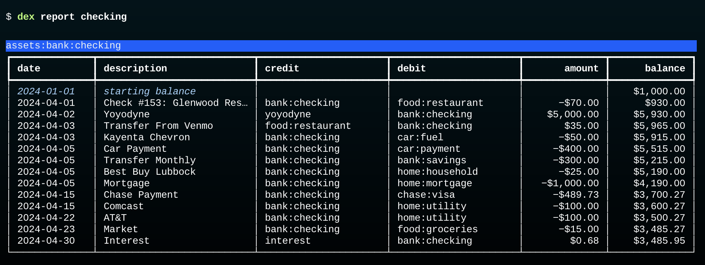
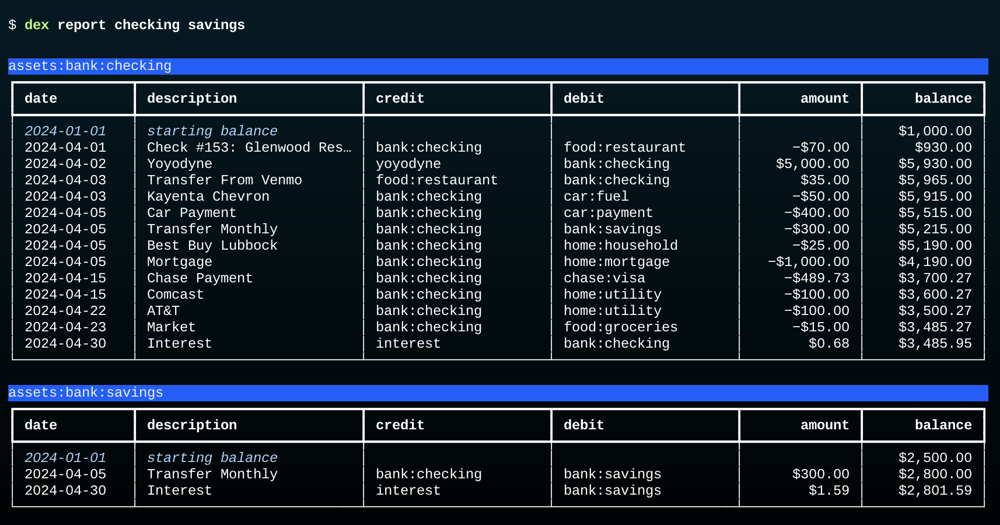
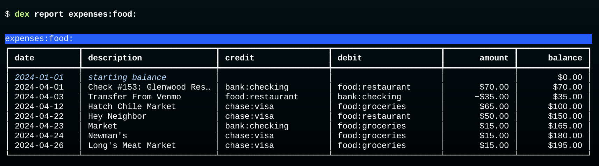
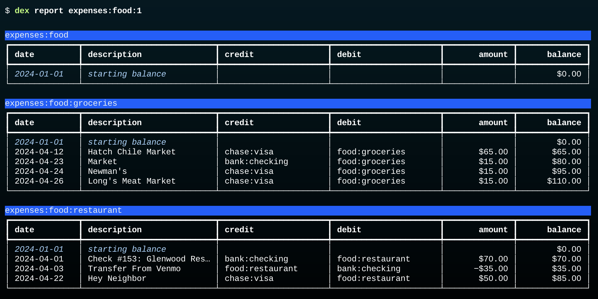

Reports
The report command is similar to select, in that it will print tables showing transaction data.
The differences are:
reportautomatically organizes data by account name- the tables include account balances
- data can be grouped to show total amounts in each account
Single Account
To see a list of all transactions in an account type the account name after report.
The name can be a full name, e.g. assets:bank:checking or an abbreviated name, e.g. checking:

There will be one row for each transaction where the account is used either as the credit (source) account or debit (destination) account.
Since we asked Dexter to print a report for the checking account, that account name should show up in either the credit column or debit column of the table.
Notice how when checking is in the credit column the transaction was taking money from checking and moving it to the other account and the amount is negative.
The opposite is true when checking is the debit account: the other account is the source in the credit column and the amount is positive.
Note: for brevity the initial part of an account name (
income:,expenses:, _etc) is not printed.
Multiple Accounts
If more than one account is entered Dexter will print a table for each account:

Since one of our transactions was a transfer from checking to savings that transaction appears in both tables. In the checking account table the account was the credit account and the posting decreased the account balance, but in the other table the account was the debit account the the posting increased the balance.
Include Subaccounts
If the account name ends with a colon Dexter includes transactions for that account and all of its subaccounts.
For example, we have an account expenses:food with subaccounts expenses:food:groceries and expenses:food:restaurant. This command prints a table will transactions from all three accounts:

The balance on the last line shows that we spent a total of $195 on food in April.
Separate Tables for Subaccounts
The notation X: means "make a single table using account X and all its subaccounts".
A slight variation is to put a number after the colon.
X:n means "make separate tables for X and all its subaccounts n levels down".
So expenses:food:1 tells Dexter to print a table for expenses:food and its two top level subaccounts:

The first table is for expenses:food.
We didn't have any transactions for this category -- all our purchases went to either groceries or restaurant -- but this account is available for miscellaneous purchases (snacks?) that don't fit in either of the subaccounts.
Subsubaccounts
We don't have any subaccounts below groceries or restaurant, but if we did those would be put in the corresponding table.
For example, we might add new accounts named expenses:food:restaurant:fastfood, expenses:food:restaurant:fancy, etc.
Any expenses in those categories would be collected into the restaurant table.
If we have those extra subaccounts we can print separate tables for them, too, by specifying expenses:food:2 on the command line, meaing "separate tables for food and all subaccounts down two levels."
Notation
A mnemonic for rememberis the difference between X: (without a level number) and X:n is to think of the colon at the end as an asterisk in a shell command: "expenses:food:" is like "expenses:food*", which is a pattern that would match any file with a name that starts "expenses:food".
We considered using an asterisk instead of a colon at the end of an account name but that makes it harder to type the shell command since shells have their own meaning for the asterisk. We would have to put single quotes around the account name and type
$ dex report 'expenses:food*'_A future version might accept either notation.
Groups
A --grouped option along with a name pattern that would make separate tables tells Dexter to compute the balance of each table and then collect the results into a single table to print: